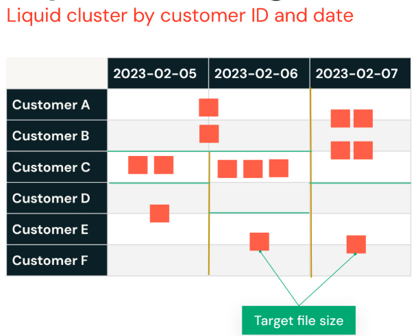

Section 6 · Troubleshooting, Monitoring and Optimization · Quelle: Kurs 7, Kapitel 2.2.5
Z-Ordering und Partitionierung (Kapitel 06-2) haben einen gemeinsamen Nachteil: Sie erfordern manuelle Entscheidungen – welche Spalte, welche Kardinalität, wann neu optimieren – und reagieren schlecht auf sich ändernde Abfragemuster. Liquid Clustering ist Databricks' Antwort darauf: eine Technik, die Partitionierung und Z-Ordering ersetzen soll, indem sie sich automatisch und fortlaufend an die tatsächlichen Daten und Abfragen anpasst.
Anders als bei starren Partitionsgrenzen zielt Liquid Clustering darauf ab, eine konsistente Zieldateigröße zu erreichen. Statt Daten in feste Partitionen zu zwingen, entscheidet Databricks intelligent, welche Wertebereiche zu welchen Dateien zusammengefasst werden, damit die Dateigrößen über die gesamte Tabelle hinweg möglichst gleichmäßig bleiben. Dazu speichert Liquid Clustering zusätzliche Metadaten, mit deren Hilfe neu geschriebene Daten direkt beim Schreiben („Clustering on Write“) in die bestehende Clusterstruktur eingeordnet werden.

OPTIMIZE: Nur die noch nicht optimal geclusterten Bereiche werden neu geschrieben, nicht die gesamte Tabelle.Anstelle von PARTITIONED BY oder eines nachträglichen ZORDER BY wird beim Anlegen einer Tabelle CLUSTER BY mit den gewünschten Clustering-Spalten angegeben. Alternativ lässt sich mit CLUSTER BY AUTO die Auswahl der Clustering-Spalten vollständig Databricks überlassen (siehe Predictive Optimization unten).
-- Tabelle mit Liquid Clustering anlegen CREATE TABLE events ( event_id BIGINT, event_time TIMESTAMP, user_id STRING, event_type STRING ) CLUSTER BY (event_type, user_id); -- Clustering-Keys nachträglich ändern -- ohne vollständige Neuschreibung der Tabelle ALTER TABLE events CLUSTER BY (event_type); -- Clustering periodisch anwenden (inkrementell, nur unclustered Daten werden bearbeitet) OPTIMIZE events;
Unabhängig vom gewählten Layout-Verfahren lohnt es sich, regelmäßig aktuelle Tabellenstatistiken zu berechnen. Sie helfen der Adaptive Query Execution (Kapitel 06-1) unter anderem dabei, die passende Join-Strategie zu wählen, die richtige Build-Seite bei einem Hash-Join zu bestimmen und die Join-Reihenfolge bei Multi-Way-Joins zu kalibrieren.
ANALYZE TABLE mytable COMPUTE STATISTICS FOR ALL COLUMNS;
Predictive Optimization geht noch einen Schritt weiter als Liquid Clustering selbst: Sie übernimmt die routinemäßige Wartung von Delta-Tabellen vollautomatisch. Auf Basis der beobachteten Workload-Muster entscheidet Databricks im Hintergrund, wann OPTIMIZE (Dateigrößen optimieren) und VACUUM (nicht mehr benötigte Datendateien entfernen und so Speicherkosten senken) ausgeführt werden sollten – ganz ohne dass diese Jobs manuell geplant oder überwacht werden müssen. Wenn CLUSTER BY AUTO verwendet wird, wählt Predictive Optimization zusätzlich selbstständig die effektivsten Clustering-Spalten anhand des tatsächlichen Abfrageverhaltens aus und passt diese Wahl an, sobald sich die Zugriffsmuster ändern. Die Wartungsjobs laufen dabei auf Serverless-Compute, sodass auch hierfür keine eigene Cluster-Verwaltung nötig ist.